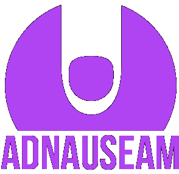

AdNauseam
clicking ads
so you don't have to.
As online advertising is becoming more automatic, universal and unsanctioned, AdNauseam works to complete the cycle by automating all ad-clicks universally and blindly on behalf of the target audience. Working in coordination with your ad blocker, AdNauseam quietly clicks every blocked ad, registering a visit on the ad networks databases. As the data gathered shows an omnivorous click-stream, user profiling, targeting and surveillance becomes futile.
AdNauseam is a browser extension designed to obfuscate browsing data and protect users from surveillance and tracking by advertising networks. Simultaneously, AdNauseam serves as a means of amplifying users' discontent with advertising networks that disregard privacy and facilitate bulk surveillance agendas.
AdNauseam joins a broader class of software systems that attempt to serve ethical, political, and expressive ends. In light of the industry's failure to achieve consensus on a Do Not Track standard, or to otherwise address the excesses of network tracking, AdNauseam allows individual users to take matters into their own hands, fighting back against unilateral surveillance. Taken in this light, the software follows an approach similar to that of TrackMeNot, employing obfuscation as a strategy to shift the balance of power between the trackers and the tracked. For further information on this approach, please see this paper.